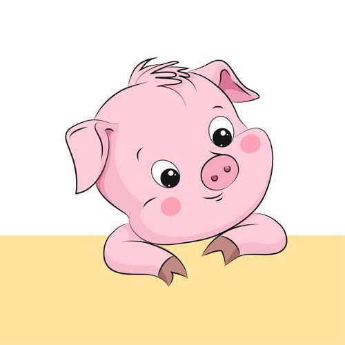

CATS
Cat is simply dummy text of the printing and typesetting industry.

Cat is simply dummy text of the printing and typesetting industry.
यह एक लंबा स्थापित तथ्य है कि जब एक पाठक एक पृष्ठ के खाखे को देखेगा तो पठनीय सामग्री से विचलित हो जाएगा.
Pigs
Pig is simply dummy text of the printing and typesetting industry.

Pig is simply dummy text of the printing and typesetting industry.
यह एक लंबा स्थापित तथ्य है कि जब एक पाठक एक पृष्ठ के खाखे को देखेगा तो पठनीय सामग्री से विचलित हो जाएगा.
Dog
Dog is simply dummy text of the printing and typesetting industry.

Dog is simply dummy text of the printing and typesetting industry.
यह एक लंबा स्थापित तथ्य है कि जब एक पाठक एक पृष्ठ के खाखे को देखेगा तो पठनीय सामग्री से विचलित हो जाएगा.